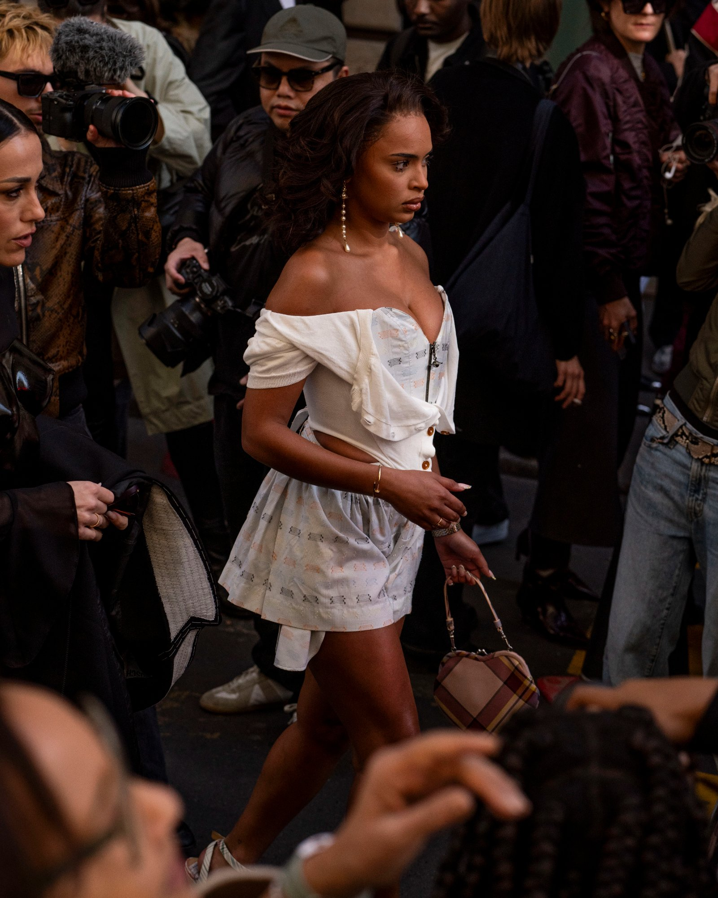
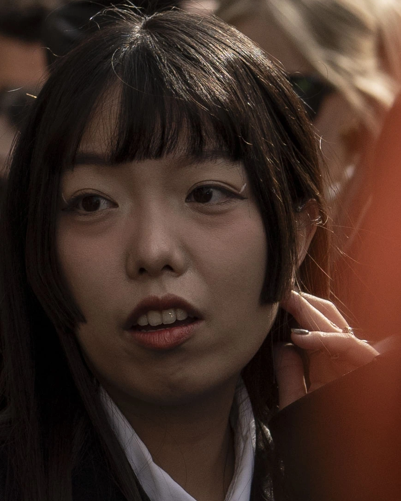
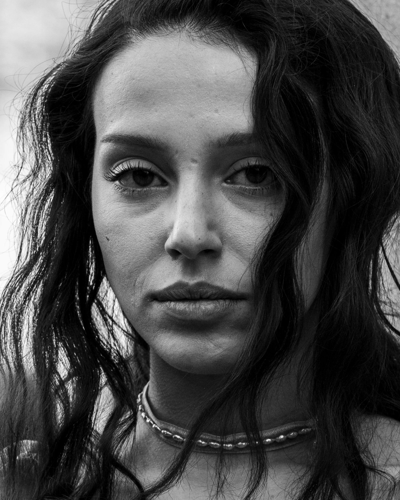
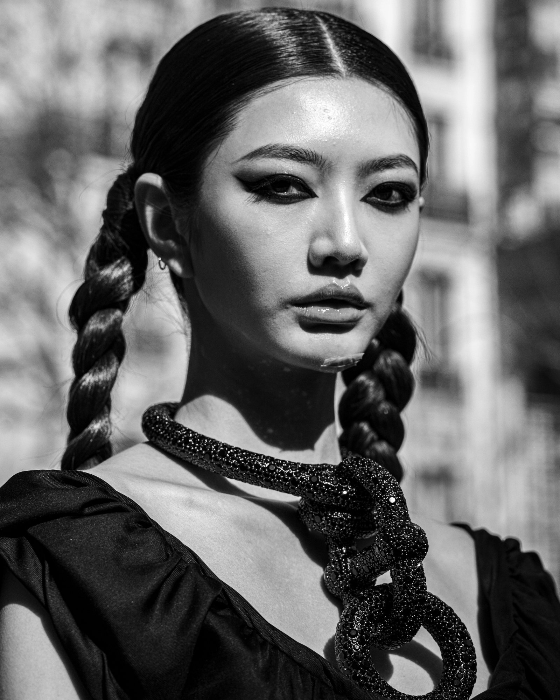
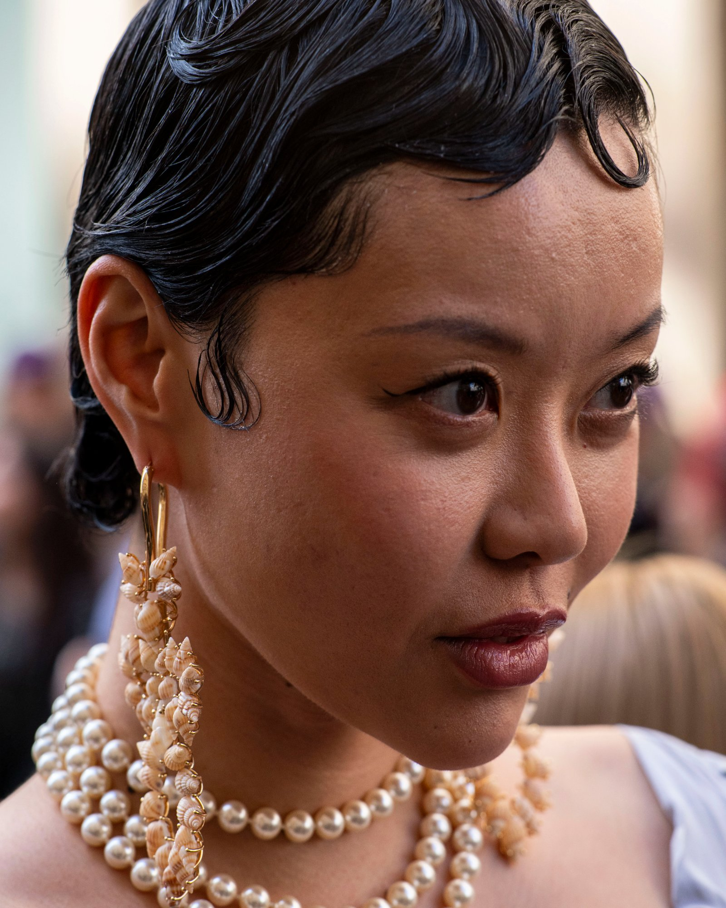

Photographe événementiel à Paris — disponible pour vos projets (devis gratuit en bas de page)
La Fashion Week Paris est un terrain exigeant pour tout photographe événementiel. Entre lumière changeante, foule dense et timing imprévisible, chaque instant doit être anticipé pour capturer des images fortes et exploitables.
Dans cet article, je vous emmène dans les coulisses d'un reportage photo en conditions réelles, avec des conseils concrets issus du terrain.



Préparer un reportage photo événementiel
Un bon reportage événementiel à Paris commence toujours par une préparation rigoureuse. Quelques jours avant le défilé, je repère les marques, les lieux et les horaires afin d'optimiser mes déplacements.
Une fois sur place, j'identifie rapidement les zones stratégiques : entrées, sorties, zones lumineuses et arrière-plans intéressants.
Pour cet événement, j'utilisais un Sony A7R3 accompagné d'un Samyang 85mm f/1.4, un objectif idéal pour isoler les sujets et capturer des portraits détaillés même dans la foule.
« En photographie événementielle, l'imprévu est constant. La préparation permet d'y répondre efficacement. »
Gérer la foule et anticiper les mouvements
Photographier la Fashion Week demande une capacité d'anticipation quasi instinctive. Il ne suffit pas de réagir, il faut se positionner avant que l'action ne se produise.
J'observe les trajectoires des modèles, les interactions et les moments clés pour me placer au bon endroit, avec un cadrage déjà prêt.
- ISO 100 pour une netteté optimale en extérieur
- Ouverture f/5.6 pour un bon équilibre entre lumière et précision
- Vitesse 1/640 s pour figer les mouvements
- Mode rafale pour capturer les instants décisifs
Capturer l'essence d'un événement
Sur plus de 400 photos prises, environ 200 ont été sélectionnées et retouchées. En photographie événementielle, l'objectif n'est pas la quantité mais l'impact visuel.
Les images les plus fortes sont celles qui racontent une histoire : une émotion, une attente, une interaction ou un instant fugace.


Ce qu'un reportage photo doit transmettre
Un reportage réussi ne se limite pas à documenter un événement. Il doit transmettre une ambiance, une énergie et une vision.
C'est cette approche qui permet de créer un véritable storytelling visuel autour de la Fashion Week Paris.
FAQ – Photographie événementielle
Comment photographier un événement avec beaucoup de monde ?
Il faut anticiper les déplacements, choisir un bon positionnement et utiliser une vitesse rapide pour figer l'action.
Quel objectif pour la photographie événementielle ?
Un 85mm est particulièrement adapté pour isoler les sujets et obtenir un rendu professionnel en environnement dense.